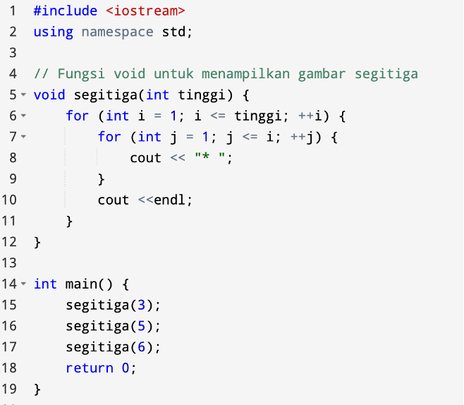
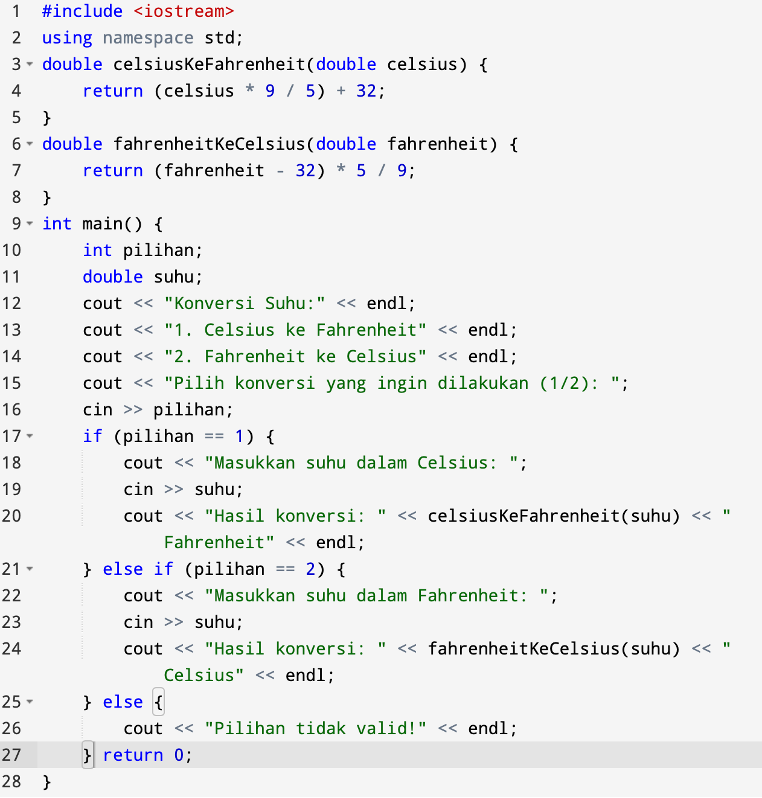

JOBSHEET 7
Judul Praktikum: Fungsi
Tujuan Praktikum
- Memahami dan mampu menggunakan fungsi tanpa nilai balik (void).
- Memahami Memahami dan mampu menggunakan fungsi dengan nilai balik (non-void).
Praktikum 7
Praktikum 7.1 (Void)

Praktikum 7.2 (Non-Void)
